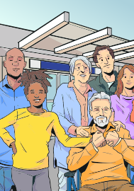
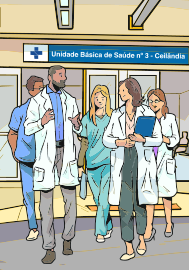

Realizar o cuidado integral à saúde da população adscrita,
prioritariamente no âmbito da Unidade Básica de Saúde, e quando necessário, no domicílio e demais
espaços comunitários (escolas, associações, entre outros), com atenção especial às populações que
apresentem necessidades específicas (em situação de rua, em medida socioeducativa, privada de
liberdade, ribeirinha, fluvial, etc.).
Participar do processo de territorialização e mapeamento da área
de atuação da equipe, identificando grupos, famílias e indivíduos expostos a riscos e
vulnerabilidades;
Cadastrar e manter atualizado o cadastramento e outros dados de
saúde das famílias e dos indivíduos no sistema de informação da Atenção Básica vigente, utilizando
as informações sistematicamente para a análise da situação de saúde, considerando as características
sociais, econômicas, culturais, demográficas e epidemiológicas do território, priorizando as
situações a serem acompanhadas no planejamento local;

Realizar ações de atenção à saúde conforme a necessidade de saúde
da população local, bem como aquelas previstas nas prioridades, protocolos, diretrizes clínicas e
terapêuticas, assim como, na oferta nacional de ações e serviços essenciais e ampliados da AB; [...]
(BRASIL, 2017)